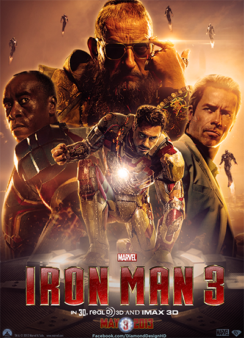

Iron Man 3 (2013) is a superhero film from the Marvel Cinematic Universe, directed by Shane Black. It follows Tony Stark as he battles anxiety and a mysterious terrorist known as the Mandarin. After his world is destroyed, Stark must rely on his intellect and courage to survive and fight back. The film explores themes of identity, trauma, and redemption. Stark confronts powerful enemies, including Aldrich Killian, who seeks revenge using an experimental treatment called Extremis. As Iron Man, he must learn that the man behind the armor is what truly matters. It’s a thrilling, emotional chapter in Stark’s journey.
